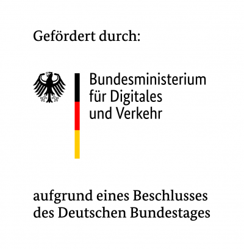

Geodatenanalyse in der Cloud mit
OGC API Processes und pygeoapi
Hannes Blitza, terrestris GmbH & Co. KG
Christian Mayer, meggsimum - Büro für Geoinformatik
FOSSGIS 2023, 16.03.2023
Christian Mayer

- Geoinformatiker
- Anwendungsentwickler
- OSGeo Foundation Charter Member
Hannes Blitza
www.klips-projekt.de
KI-basierte Informationsplattform für die Lokalisierung und Simulation von Hitzeinseln für eine innovative Stadt- und Verkehrsplanung
Autoren
Christian Mayer
meggsimum - Büro für Geoinformatik
Schillerstraße 2a
67112 Mutterstadt
chris@meggsimum.de
meggsimum - Büro für Geoinformatik
Schillerstraße 2a
67112 Mutterstadt
chris@meggsimum.de
Hannes Blitza
terrestris GmbH & Co. KG
Kölnstr. 99
53111 Bonn
blitza@terrestris.de
terrestris GmbH & Co. KG
Kölnstr. 99
53111 Bonn
blitza@terrestris.de
Lizenz
Diese Folien sind unter CC BY-SA veröffentlicht.